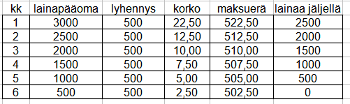
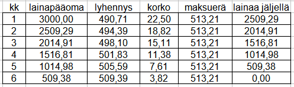

Tehtäviä osaan MAB7
Contents
Tehtäviä osaan MAB7#
Laske ensin kukin tehtävä itse, katso vasta sen jälkeen vastaus ja malliratkaisu
Lukujonot#
1.1 Lukujono (11,18,25,…,564) on aritmeetinen. Montako termiä siinä on? Mikä on termien summa?
Vastaus: 80 termiä, summa on 23000
Ratkaisu:
Termien määrä n ratkaistaan kaavasta \(a_n = a_1 + (n-1)d\) sijoittamalla \(a_1=11, a_n=564, d = 7\)
Yhtälöstä 564=11+(n-1)*7 saadaan n-1 = (564-11)/2 , josta n = 80
Summa lasketaan kaavalla \(S=n*(a_1+a_n)/2 = 80*(11+564)/2 = 23000\)
1.2 Maijalla on valmistuessaan 12000 euroa opintolainaa, joka hänen tulee maksaa tasalyhennysperiaatteella 6 vuoden aikana puolivuosittaisilla maksuilla. Puolen vuoden korko on 2.0%. Kuinka monta euroa Maija maksaa korkoja yhteensä?
Vastaus: 11.7% pienempi
Ratkaisu:
Lainan lyhennys on 12000/12 = 1000 euroa puolivuosittain.
Korot muodostavat aritmeettisen sarjan (2%*12000 = 240, 2%*11000 = 220, …., 2%*1000 = 20), jonka summa
\(S = n\frac{a_1+a_n}{2}= 12\frac {240+20}{2} = 1560\) euroa
1.3 Aritmeettisen jonon 4. termi on 20 ja 10. termi on 38. Määritä jonon 1. termi \(a_1\) ja perättäisten termien erotus d.
Vastaus: \(d = 3\) ja \(a1= 11\)
Ratkaisu:
ja 10. termin väli on 6 d. Ts. 38-20 = 6 d => 18 = 6 d => d = 18/6 = 3
ja 4. termin väli 20 - a1 = 3d = 9 => 20 - a1 = 9 => 20-9 = a1 => a1 = 11.
Tulokset saisi ratkaisemalla yhtälöpari 20 = a1 + (4-1)d , 38 = a1 + (10-1)d
1.4 Isä lupasi lahjoittaa lapselleen 1v päivänä 0.1 euroa, 2v-päivänä 0.2 euroa, 3v-päivänä 0.4 euroa jatkaen tuplaamista aina siihen saakka kun lapsi täyttää 18 vuotta. Kuinka suuri on kaikkien lahjoitusten yhteismäärä?
Vastaus: \(26214 \) euroa
Ratkaisu:
0.1, 0.2, 0.4, …. on geometrinen jono, jonka 1. termi \(a_1 = 0.1\) ja suhdeluku \(q = 2\)
Summa \(S =a_1\frac{1-q^n}{1-q} = 0.1\frac{1-2^18}{1-2} = 26214 \) euroa
1.5 Mikä on jonon $10\cdot 1.2,10\cdot 1.2^2, 10\cdot 1.2^3, …. 20. termin likiarvo?
Vastaus: 383.4
Ratkaisu:
termi \(a_1 = 10*1.2 = 12\) ja suhdeluku \(q = 1.2\)
Jonon n:s termin saadaan kaavalla \(a_n = a_1*q^{n-1}\), joten kun n = 20, saadaan \(12*1.2^{19}=383.4\)
1.6 2000 euron talletukselle maksetaan korkoa kerran vuodessa. Korko lisätään vuosittain pääomaan. Viiden vuoden kuluttua tilillä on 3221 euroa. Mikä on korkoprosentti?
Vastaus: 10%
Ratkaisu:
Merkitään korkokerrointa x:llä (korkokerroin on 1 + i, missä i on korkoprosentin desimaaliesitys).
Tilin saldo 5 vuoden kuluttua on \(2000 x^5\), joka on siis 3221.
Ratkaistaan yhtälö \(2000 x^5 = 3221\) joko laskimen solve:lla tai manuaalisesti:
\(x^5 = \frac{3221}{2000} = 1.6105\) Otetaan 5:s juuri molemmista puolista
x = \(\sqrt[5]{1.6105} = 1.10\) , joten i = 1.10 - 1 = 0.10 = 10%
Vastaus: korko on 10%
Huom! Tämänkin tehtävän ratkaisun välivaiheineen saisi kopioimalla kysymystekstin tekoälyyn, jollainen löytyy esim. Edge-selaimesta.
Koronkorkolaskut#
2.1 20000 euron,4 vuoden määräaikaistalletuksen nimelliskorko on 2.00 %. Korko maksetaan puolivuosittain tilille? Mikä on tilin loppusaldo? Mikä on efektiivinen korko?
Vastaus: 21657 € , \(i_{eff}=2.01\%\)
Ratkaisu:
Koska korkojakso < vuosi, käytetään kaavaa \(K = k(1+\frac{i}{n})^{n\cdot t} =20000(1+\frac{0.02}{2})^{2\cdot 4} \) =21657
Efektiivinen korko \(i_{eff}=(1+\frac{i}{2})^2\) = 0.0201 = 2.01%
Calc-ohjelmalla =TULEVA.ARVO(2%/2;24;;20000) ja =KORKO.EFEKT(2%;2)*
2.2 Kiinteistön arvo v.2020 oli 120000 €. Oletetaan, että arvo nousee tasaisesti 2% vuodessa. Mikä arvo on v.2030?. Mikä arvo oli v.2008? Milloin arvo ylittää 150000 € rajan?
Vastaus: 146279 € , 94619 € , v. 2031 aikana
Ratkaisu:
a) v. 2030 arvo \(K = k(1+i)^{t} =120000\cdot (1.02)^{10} =146279\)
b) v. 2008 arvo \(K = k(1+i)^{t} =120000\cdot (1.02)^{-12} \)= 120000/1.02^12 =94619
c) kaava t = log(K/k)/log(1+i) antaa log(150000/120000)/log(1.02) = 13.3, josta 2020 + 11.33 = 2031
Calc-ohjelmalla =TULEVA.ARVO(2%;10;;120000), =NYKYARVO(2%;12;;120000) ja NJAKSO(2%;;-120000;150000)
2.3 Kultaharkosta maksettiin 600 euroa. 12 vuotta myöhemmin se myytiin 3200 eurolla? a) Mikä oli vuosittainen keskimääräinen tuottoprosentti? a) Mikä oli reaalinen tuottoprosentti, jos inflaatio oli keskimäärin 3% vuodessa? Mikä oli reaalinen tuottoprosentti, jos rahan arvo aleni 4% vuodessa ja myyntivoitosta maksettiin 30% vero ?
Vastaus: a) 15% b)11.6% c) 5.6%
Ratkaisu:
a) Korkokannan laskukaava \(i = \sqrt[t]{K/k}-1\) antaa \(i = \sqrt[12]{3200/600}-1 = 0.1497 = 15.0\%\)
b) Myyntihinta pitää diskontata ostohetkeen: 3200/1.03^12 = 2244 €. Inflaatiokorjattu tuotto on \(\sqrt[12]{2244/600}-1 = 0.116 = 11.6\%\)
c) Myyntivoitosta 3200- 600 eli 2600 maksetaan veroa 30% eli 780 euroa, jonka jälkeen myyntitulo on 2420 euroa.
Korjattuna ostovuoden hintatasoon se on 2420*0.96^12 = 1151.7
Näin laskien reaalinen tuottokorko on \(\sqrt[12]{1151.7/600}-1 = 0.0556 = 5.6\%\)
2.4 Poksi asuntovaunu maksaa uutena 15000 euroa. Sen arvo alenee 4.5 % vuodessa? Minkä arvoinen se on 10 v kuluttua?
Vastaus: 9465 €
Ratkaisu:
\(K = k(1+i)^{t} =15000\cdot (1-0.045)^{10} = 15000\cdot (0.955)^{10} = 9465\)
Calc ohjelmalla: =TULEVA.ARVO(-4,5/100;10;;15000)
Pitkäaikaiset lainat#
Ao. tehtävissä käytetään oppimateriaalissa esitettyjä kaavoja, joita löytyy myös kaavakirjoista. Laskut voidaan tehdä myös Calc -taulukkolaskentaohjelmalla
3.1 Opiskelija ostaa pesukoneen luotolla, jonka maksuaika on 18 kk. Luottosumma on 400 Euroa, korko 6% vuodessa eli 0.5% kk:ssa. Mikä on kuukausierän suuruus?
Vastaus: 23.29 €
Ratkaisu:
Laskukaavalla maksuerän suuruus \(p = \frac {k\cdot i}{1-(1+i)^{-n}}=\frac {400\cdot 0.005}{1-(1.005^{-18}} = 23.29\)
Calc ohjelmalla: = PMT(0,5%;18;400) antaa 23.29
3.2 S-pankin VISA- kortin (nimellis) korko on 15%. Mikä on efektiivinen korko, kun korkojakso on kuukausi?
Vastaus: 16.1%
Ratkaisu:
Todellinen korko \(i_{eff}=(1 + \frac{i}{12})^{12} - 1 = (1+0.15/12)^{12} -1 = 0.1608 = 16.08\% \)
Calc ohjelmalla =KORKO.EFEKT(15%;12) argumentit: nimelliskorko, ja erien määrä vuodessa
3.3 Sijoitusrahastoon tallennetaan 8 vuoden ajan 100 euroa/kk. Nimelliskorko (per vuosi) = \(2.4%\) eli kk-korko on \(0.2%\). Mikä on tilin loppusaldo?
Vastaus: 10593 euroa
Ratkaisu:
Sijoitetaan kaavaan S = \(p\cdot (1+i)\frac{(1+i)^n-1}{i}\) p = 100, i = 0.002, ja n = 96. Saadaan
\(S = 100\cdot 1.002 \frac{1.002^{96}-1}{0.002} = 10593\)
Calc ohjelmalla: = TULEVA.ARVO(0,2%; 96; 100;;1)
3.4 Tee taulukkolaskentaohjelmalla lainalaskelma 3000 euron luotolle, joka maksetaan takaisin 6 kuukauden aikana tasalyhennysperiaatteella. Lainan nimelliskorko on 9% eli 0.75% kuukaudessa.
Vastaus: Tee tehtävä Calc- ohjelmalla. Kuvakaappaus taulukosta aukeaa alapuolelta
Ratkaisu:
Lasketaan aluksi tasalyhennys jakolaskulla 3000/6 = 500

3.4 Tee taulukkolaskentaohjelmalla lainalaskelma 3000 euron *tasaerälainalle, joka maksetaan takaisin 6 kuukauden aikana. Lainan nimelliskorko on 9% eli 0.75% kuukaudessa.
Vastaus: Tee tehtävä Calc- ohjelmalla. Kuvakaappaus taulukosta aukeaa alapuolelta
Ratkaisu:
Lasketaan aluksi tasaerä esim. Calc- ohjelmalla: =PMT(0,75%; 6; 3000), joka antaa 513.207
